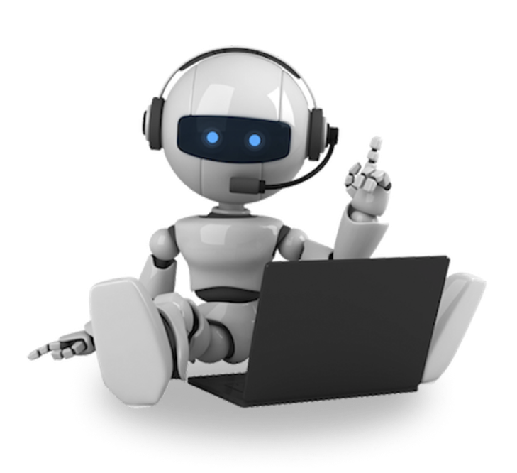

Have fun with this website !
This is a website made for Harvard’s CS50x Final Project, where I had the freedom to build anything I wanted using the knowledge acquired in the whole course.
Read More

This is a website made for Harvard’s CS50x Final Project, where I had the freedom to build anything I wanted using the knowledge acquired in the whole course.
Read MoreCopyright © 2021 Eduardo Moraes. All Rights Reserved.
{% endblock %} {% block section2 %}This project was made with the pourpose to make a beautiful UI with accessibility in mind, improving the UX
for all users.
For this project I made a Glassmorphism Website with the Back-End in Flask(Python) and MySQL as the Database. The Front-End is written in HTML, CSS and JavaScript.
The reason I didn’t use a CSS Framework(like Bootstrap) was because I felt that I would rewrite most of the pre-define UI Kit.
Copyright © 2021 Eduardo Moraes. All Rights Reserved.